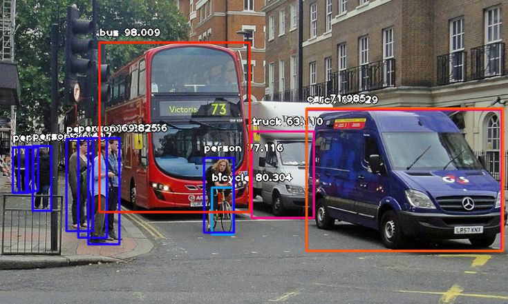
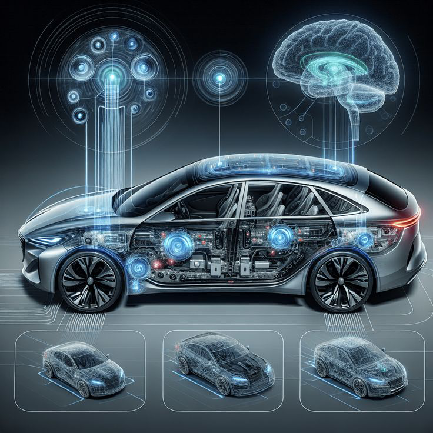
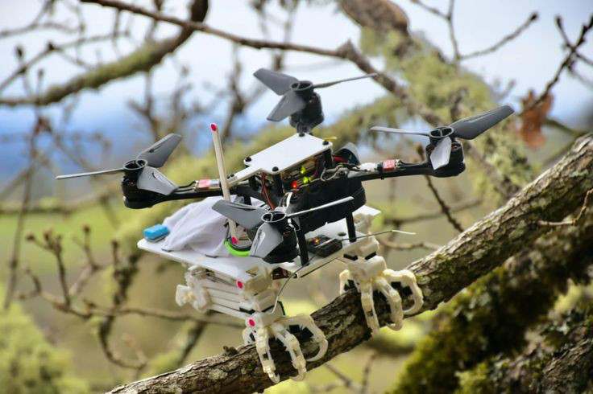
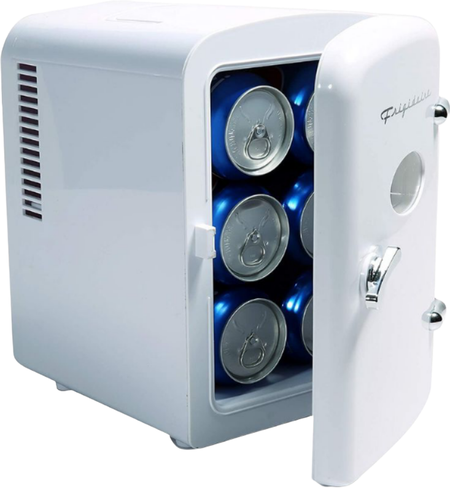
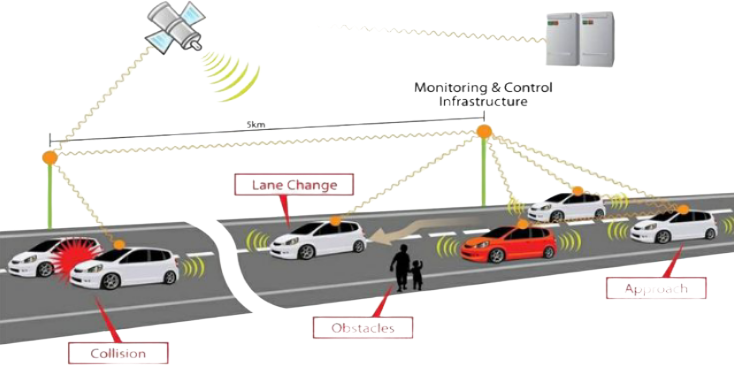
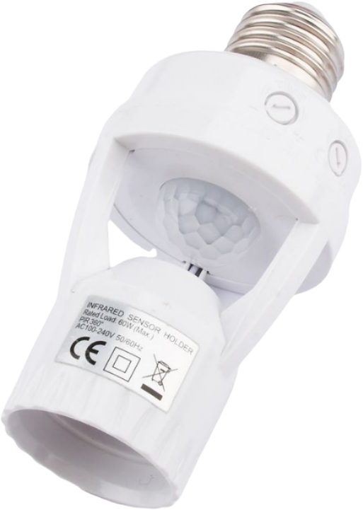

An intelligent sensing and automatic lighting system utilizes sensors
such as motion detectors,ambient light sensors, and occupancy sensors to
monitor environmental conditions in real time. When movement or low light
levels are detected, the system automatically switches lights on,
enhancing convenience and energy efficiency.

ARNOMALLY DETECTION DEEP SURVEILLANCE
Anomaly detection utilizing deep surveillance technologies involves using advanced artificial intelligence
and deep learning algorithms to identify unusual patterns or behaviors within monitored environments.
These systems process vast amounts of video or sensor data in real time,
learning normal activity patterns and flagging deviations that may indicate security threats,
equipment failures, or suspicious behavior.

ADVANCED ECU
An advanced Electronic Control Unit (ECU) for modern smart SUVs serves as the central brain
that manages and coordinates multiple vehicle systems for enhanced performance,
safety, and connectivity. These ECUs integrate functionalities such as engine
management, advanced driver-assistance systems (ADAS), infotainment, and real-time diagnostics.

MODROFALCON DRRONE PROJECT
New advanced drone technology mimicking the falcon bird combines bio-inspired design with cutting-edge aerodynamics,
enabling enhanced agility, speed, and maneuverability. These drones replicate the wing structure and flapping patterns of falcons,
allowing them to glide, dive, and change direction with remarkable precision.

PROJECT PORTABLE MODGEN FRIDGE
A feasible and economical solution for personal cooling needs in outdoor activities,
travel, and compact living spaces. These mini fridges typically use thermoelectric or
low-power compressor technology,making them energy-efficient and quiet.

REVOLUTIONALIZED TRANSPORT ANTI COLLISION SYSTEM
Anti-collision systems in modern SUVs are intelligent safety technologies
designed to prevent or reduce the severity of accidents.
these systems use a combination of radar, LiDAR, ultrasonic sensors,
and cameras to continuously monitor the vehicle’s surroundings.
PROJECT POWER BUSINESS INTELLIGENCE
Power BI is a powerful business analytics tool developed by Microsoft
that helps organizations visualize their data and make informed decisions.
It connects to various data sources—such as Excel, SQL databases,
cloud services, and web APIs—and transforms raw data into interactive dashboards and insightful reports.

PROJECT GENERIC
A generic ATS is an automatic device that switches power from the main source to a backup generator during outages,
ensuring uninterrupted power. A generic sensor detects environmental or physical changes—such as temperature, motion, or
light—and converts them into electrical signals for monitoring and automation. An intelligent smart switch allows remote
or automated control of electrical appliances, offering enhanced convenience, energy efficiency, and seamless integration
with smart home or industrial systems,
Sign up for Newsletters
Get Email updates about ur latest and special offers